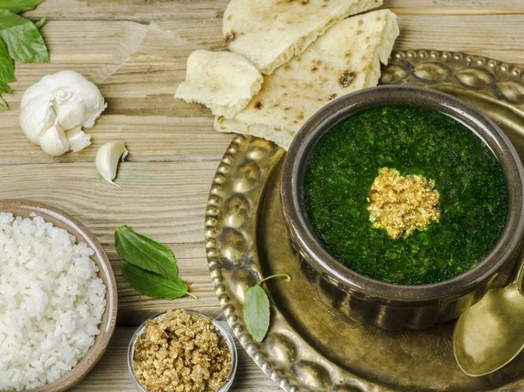

Melokhia

Description
Mulukhiyah, also known as molokhia, molohiya, or ewedu, is a dish made from the leaves of Corchorus olitorius, commonly known in English as denje'c'jute, nalta jute, tossa jute. It is used as a vegetable and is mainly eaten in the Levant, Egypt, Sudan, Cyprus, Libya, Tunisia and Algeria.
Ingredients
- Cooking liquid
- Frozen Molokhia
- Dry coriander
- Garlic
- Ghee
- Bullion cube
- Tomato sauce
- Baking soda
Steps
- In a deep pot over medium-high heat melt ghee.
- Sauté garlic for 15-30 seconds.
- Until lightly golden and fragrant as shown in picture.
- Add coriander and keep stirring for another 30 seconds.
- The coriander will give its fragrance and turn a little more dark brown.
- Pour in some of the broth keeping the rest after we check consistency at the end.
- Sprinkle the bouillon cube. Stir until it is dissolved.
- Add the baking soda if you chose to, notice that the broth will foam.
- Add the Molokhia, and turn down the heat to medium low, keep stirring every now and then.
- Molokhia will slowly melt in the broth. Wait until it has completely melted.
- Pour in the tomato sauce and stir well.
-
Check consistency: if it is too thick for your liking add more broth.
-
Check the seasoning and sweetness: if you need salt or more tomato sauce.
- Serve with rice and pita bread.